It’s 11:01 a.m., and I’m about to be attacked by a hippopotamus.
I’ve replayed this event many times in my mind’s eye: the swell of the
wave approaching in the clear water. The rock of the boat as we try to brace
ourselves for impact. The shouts from the people around us as they realize
what is about to happen. Kuba! Kuba! Hippo! Hippo! These harrowing
seconds are being recorded as data, as the output of a heart-rate monitor I’m
wearing across my sweaty chest.
Looking now at those numbers, the actual
millisecond-by-millisecond beats of my heart, I can see my distress
building. As a graph, it reads like an elevation map of terror, each
successive peak taking me closer to the hippo’s arrival, or to cardiac arrest.
I recently wrote a piece of software to turn those numbers back into
sound, a kind of a thump-by-thump re-creation of the attack, and I’ve got
headphones on right now, listening. As the Jer sitting in that boat gets more
and more terrified, so does the Jer sitting here in this chair, in my studio in
Brooklyn. It’s pretty easy to tell myself that there isn’t a hippo here, in this
room, but at the same time the data is a convincing record of the most
nerve-racking experience of my life.
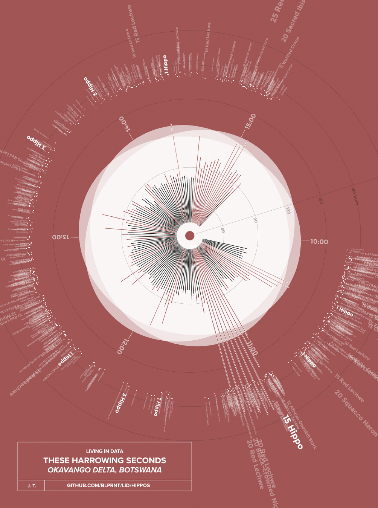
Despite being the world’s largest amphibious animals, hippos aren’t
great swimmers. The adult males weigh about as much as a minivan, and
they don’t float. They prefer to stay in the shallows, where their feet can
touch the ground. Just deep enough that their eyes and ears and nose—
stacked up at the top of their enormous heads—remain out of the water. A
scared hippo, though, or a very agitated one, will venture into a lake or a
pond or a river channel, moving with great porpoise-like leaps off the
bottom. Hydrodynamics be damned.
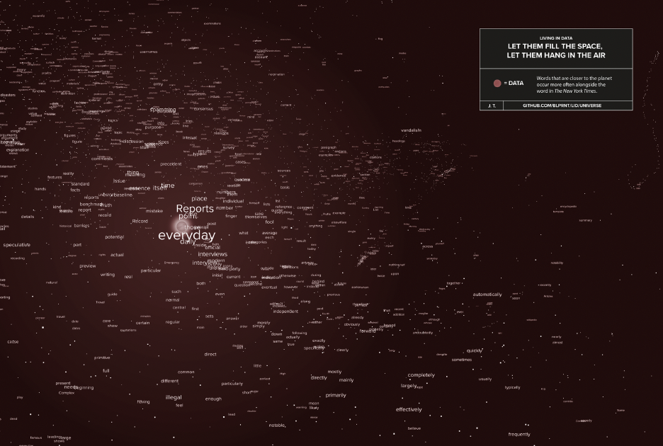
I wondered, as I watched the hippo-sized bow wave surge toward me,
what am I doing here?
I tripped and fell into data, into that boat and this book, one Saturday in
the spring of 2009. I was sitting at the little Ikea desk in my East Vancouver
flat. The cherry trees that lined my street had just burst into bloom, and the
floor under my chair was sticky with the pink petals I’d tracked in after my
morning dog walk. I was just about to give up (again) on a project I’d been
working on and reworking for nearly four years. Its central question had
come to me one day while I was staring at my screen: What if pixels could
do what they want? What if we could unbind them from their tedious life of
following instructions: how bright to shine, when to blink on and off, what
exact shade of orange they must display.
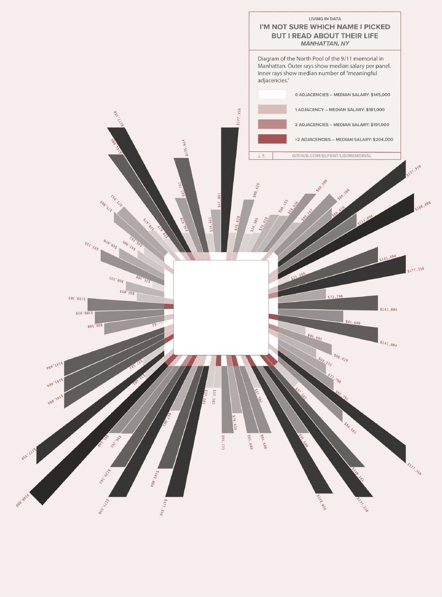
In my project I’d set the pixels free, letting them trade color with each
other in a miniature economy.
I coded the pixels to each have a kind of
personality: some were conservative; others were happy to take risk. Some
of them looked at trends in the color “market” to decide which trades to
offer; others listened to a coded oracle, which spit out a series of predictions
based on random numbers. Each color block had agency; it was free to
make whatever decisions its little programmatic brain might settle on.
As a
group—a population—these individual foibles would emerge into pattern,
and the system would be, in a small sense, alive.
The problem was that it didn’t work. No matter how I set the
parameters, the economy would collapse within ten thousand or so rounds
of trading. I’d be left with two or three extremely wealthy pixels, and the
rest would be broke. And dead. I tried changing the starting conditions,
setting the color “wealth” of each pixel from different images, photos of
sunsets or deserts or wildfires or drawings of national flags or snaps from
my webcam. I tried implementing a taxation system, where money was
distributed to the poor pixels from the wealthy ones. Some of these
solutions worked, for a long minute or two, and then the whole thing
collapsed again to the very rich and the very dead.
I decided what the system needed was some chaos, some noise from the
real world that might keep the economy on its toes. I looked first at feeds
from the stock market, but that seemed far too literal for my pixel
population. And then I had an idea: What if the real-world usage of the
words “red,” “green,” and “blue” drove their value in the color economy? If
I could get the text from news articles, I could write a program to count
these color words and then feed the numbers into my system. I googled. In
what I now recognize as a moment that crackled with serendipity, the first
result I read was about a new data service that The New York Times had
released the day before, an interface that allowed anyone to search thirty
years of articles and get back lists of results. Headlines, bylines, content
summaries, web URLs, and, with a little bit of work, occurrences of
specific words and phrases.
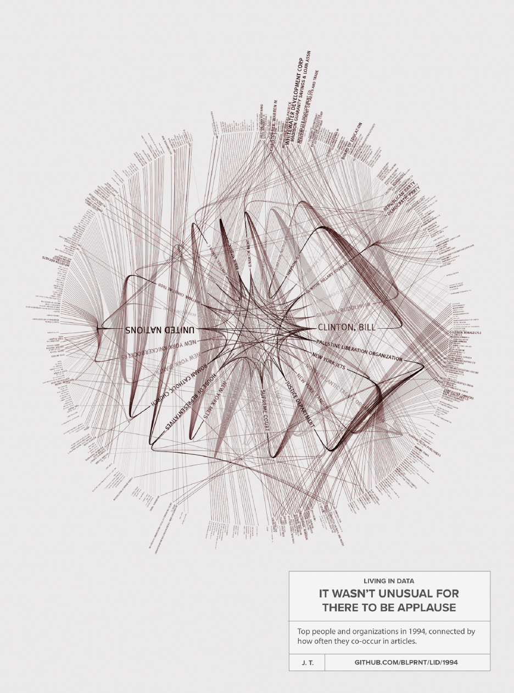
I never did finish the color project. I got caught instead in the sweeping
currents of data’s possibilities. That afternoon I wrote a program to
download 972 numbers from the Times. The numbers were counts of how
many times “red,” “green,” and “blue” had appeared in the newspaper
between the years 1981 and 2008. My computer dutifully packaged up the
requests for the numbers, twelve at a time, and after a few minutes of a gray
screen a graph appeared. It was my first data visualization.
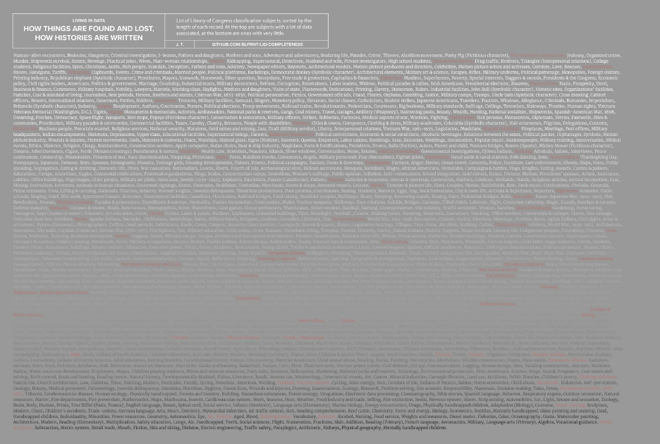
The graph itself was hardly auspicious. It was rendered in the gaudy
primary colors of a day care (or a Google office), the bars sat on top of each
other, and there was no way to tell one month from another or one year to
the next. Still, looking at this ugly thing, I could see some promise. There
was pattern, if you looked closely. While blue and red seemed to oscillate
with no regular pattern, the bar graph for green was a line of rounded
hummocks, each twelve months long, the color of the seasons reflected in
the language of the news. There was a big spike in the red graph in March
2002—the result of Homeland Security Presidential Directive 3 and its
rainbow scale showing “the risk of terrorist acts.” I spent hours reading the
data returns and matching them to every little peak in the graphs; there was
a whole history wrought in color: Deep Blue and Red Square and green
energy, Blue Cross, Red Cross, Green Berets.
I tried new combinations of words: first “sex” and “scandal,” then
“internet” and “web,” then “Iran” and “Iraq.” “Innovation” and
“regulation,” “Christianity” and “Islam.” “Superman,” “Batman,” and
“Spider-Man.” “Global warming” and “climate change.” “Hope” and
“crisis,” “science” and “religion,” “communism” and “terrorism.” Each of
these sets of words told its own visual story; each of them showed some
change in how the words were used by the writers and editors at the Times
and how they were read by millions of readers. How satisfying this simple
thing was, this trick of turning numbers into shapes and colors.
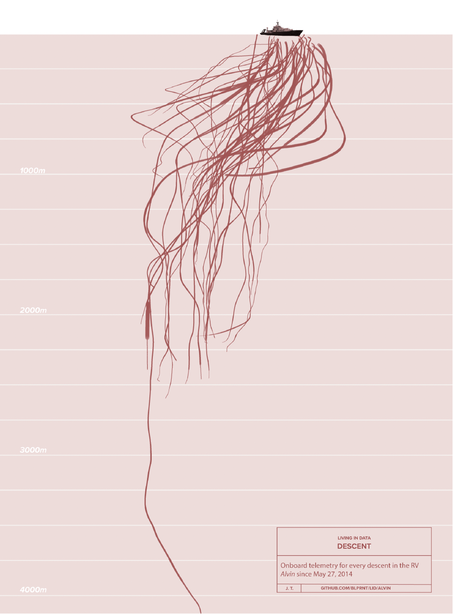
I discovered that I could draw connections between people and
organizations if they appeared in the same article, and from this realization
came dense maps of entire years of news. Ronald Reagan, the Roman
Catholic Church, the United Nations, Michael Dukakis, George Bush,
Salman Rushdie. The ANC, David Dinkins, General Motors, Bill Clinton,
Jim Bakker, the PLO. Reading the maps, year by year, was like a fastforwarding
through history, or at least through the history that had been told
by The New York Times (presidents, for the most part, occupied the center
of the maps, except in the years when the Yankees won the World Series).
I spent months adrift in the possibility space of visualization, where, it
seemed, I could conjure pattern from nothing and from everything. When I
got tired of the Times, I visualized the U.K.’s National DNA Database, the
influenza genome, Obama’s foreign policy speeches and State of the Union
addresses, and international relief donations to Haiti. I mapped everyone
who said “good morning” on Twitter in twenty-four hours, and analyzed
language from sixteen hundred issues of Popular Science. I plotted vessel
traffic in the world’s biggest shipping ports and mapped the narrative
structure of Haruki Murakami’s short stories. I created time lines of every
character in every issue of the classic Avengers. In one of my favorite
projects, I reverse engineered a map of global air travel from people
tweeting “I just landed” as they touched down in airports all around the
world.
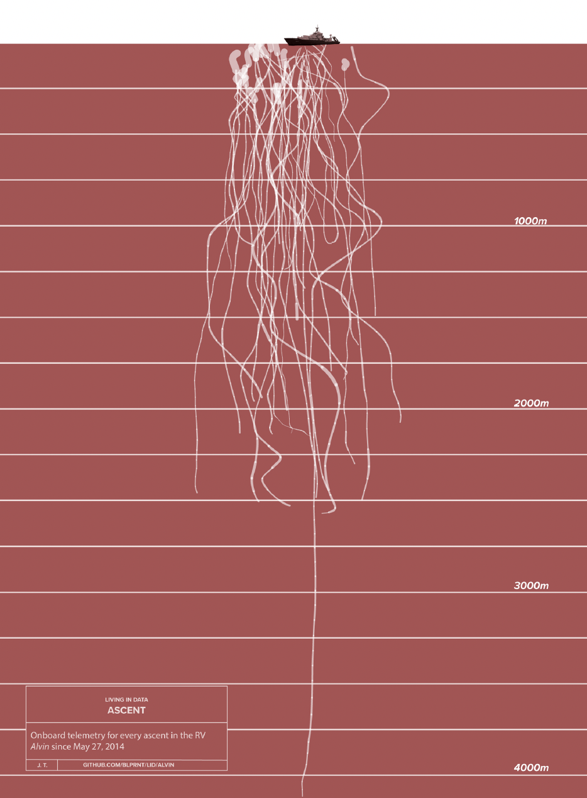
I became captivated with what I call “question farming”: using
visualization not to simplify something but to unfurl its complexities in
interesting ways, exposing things that weren’t before able to be seen. John
Tukey, one of the great defining figures of modern statistics, would describe
this kind of work as exploratory analysis, rather than the more task-oriented
confirmatory analysis. Personally, though, I discovered that this wide-open
exploration brought joy, as opposed to data visualization’s defining
emotion, satisfaction.
In the early fall of 2010, I walked into the New York Times Building on
Forty-Second Street and took the elevator to the fourteenth floor, where I’d
spend two and a half years as the company’s first data artist in residence (a
title I made up). It was fertile soil. With my colleagues there I built the first
large-scale tool for exploring social media data, a kind of interactive
forensic instrument for conversations on Twitter. With it you could clearly
see both the exhilarating expansiveness and the tangled complications of
the then-nascent social network. While I was at the Times, I started teaching
at New York University’s Interactive Telecommunications Program (ITP), a
kind of punk rock version of MIT’s Media Lab, where I set my students out
into the loamy dirt at the edges of data’s possibility space, digging, planting,
seeing what would grow.
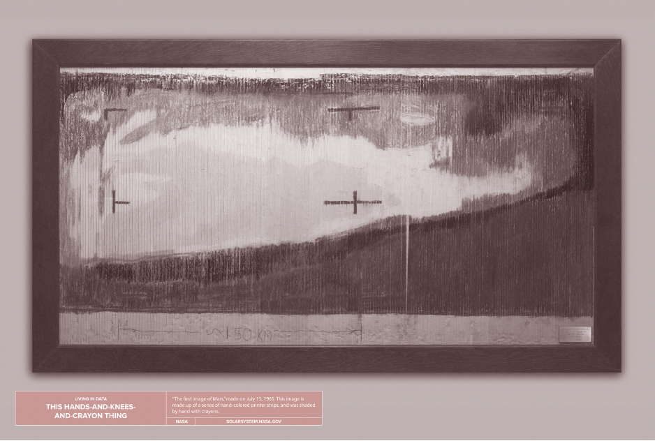
When I left the Times in 2013, I started a studio, the Office for Creative
Research (OCR), and for almost a decade we tried to break as many of
data’s rules as we could. We performed data at the Museum of Modern Art
and built it into a sculpture in the middle of Times Square. We made tools
to give people ways to navigate data’s wash: a browser extension that
analyzes the web ads that swamp our browsers, a pop-up data community
center in North St. Louis, a citizen science platform for chronic pain
sufferers. Somewhere in the midst of all this I was (much to my surprise)
named a National Geographic Explorer, and my work (and the OCR’s)
seeped out of screens and cities and into wilder places. Keen to put my new
credentials to work, I joined an expedition into the heart of Botswana’s
Okavango Delta, having traded my data skills for three square feet in the
front of a boat.
Spoiler: I didn’t die. The hippo decided, having run the energetic
equations, that we weren’t worth the effort of a capsize. Or all the mess and
noise of a thorough goring. He came out of the water a stone’s throw away,
with an openmouthed roar, showing us four gleaming tusks the size of short
swords. We poled quickly away. My pulse didn’t settle down for eleven
minutes. That afternoon we negotiated past eleven more hippos on the way
to camp. Three the next day and twenty the next. Each of them filed into a
database with an exact time, a latitude and longitude, and a clear uptick in
the speed of my heart.
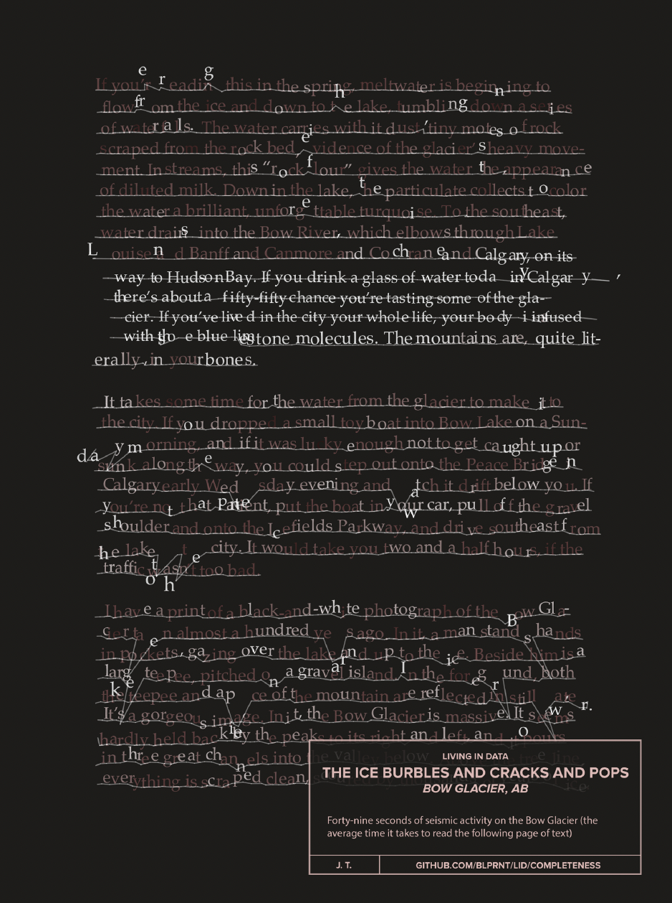
Back in New York, we kept working. When our little office on the
Bowery got too crowded, we moved into a bright space in an old telephone
company building in downtown Brooklyn. Before the new OCR opened, I
paid a sign maker to hand letter a Pynchon quotation in deep black letters
around the whole office:
She looked down a slope, needing to squint for the sunlight,
onto a vast sprawl of houses which had grown up all together,
like a well-tended crop, from the dull brown earth; and she
thought of the time she’d opened a transistor radio to replace a
battery and seen her first printed circuit. The ordered swirl of
houses and streets, from this high angle, sprang at her now with
the same unexpected, astonishing clarity as the circuit card had.
Though she knew even less about radios than about Southern
Californians, there were to both outward patterns a hieroglyphic
sense of concealed meaning, of an intent to communicate.
There’d seemed no limit to what the printed circuit could have
told her (if she had tried to find out); so in her first minute of
San Narciso, a revelation also trembled just past the threshold
of her understanding.
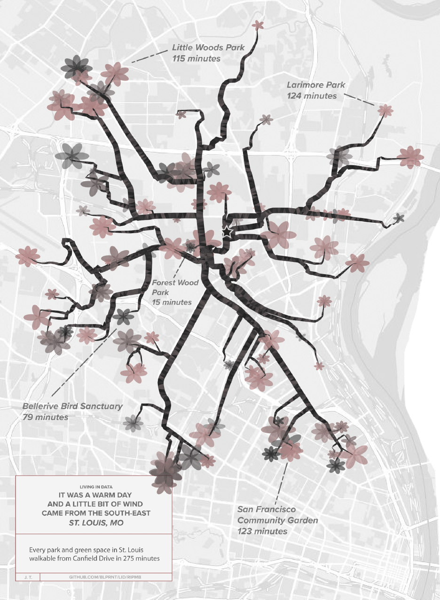
As the team grew, so did our commitment to doing work that wasn’t
tangled up in advertising, in the selling of more stuff to more people. If an
email arrived with the word “branding” in it, it’d go straight into the trash.
We said no to Google, no to Facebook. Yes to the epidemiologist with no
budget. Yes to the community art center in St. Louis. For every project we
did that paid us, we’d do two more in the service of our own curiosities and
convictions. More farming. People were often confused about whether the
OCR was a design studio, or an R&D lab, or a nonprofit. We were
somewhere in between. When people asked me what kind of business I ran,
I’d say the OCR was a “not-for-enough-profit.” Which was a joke, until it
wasn’t.
After the studio closed in 2017, I spent eighteen months at the Library
of Congress, this nation’s house of data. I waded, waist-deep, into its
millions of books and manuscripts, maps and photographs and recordings.
Again I dug, into the library’s infrastructures and file formats, its hallways
and its card catalogs and its open APIs. I planted ideas into neat rows,
watered them, tended to them. Through toolmaking and performance and
storytelling, I learned how data at the library works and how it might work
differently if we freed it—and ourselves—from technology’s incessant
expectations and constraints. While I was there, I started writing.
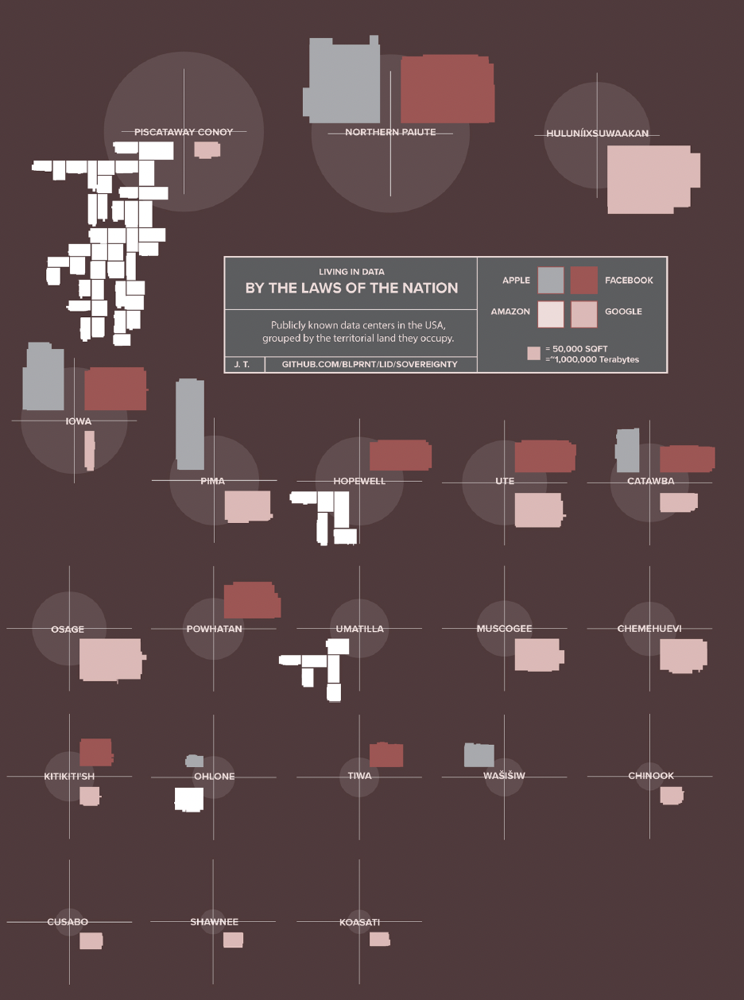
This book is a record. It is data. It’s data about these last ten years of my
life, a document of the work that I’ve done to expand my own ideas about
what data is and what data can be. It maps, in more detail and with less
linearity, my path from that basement studio in Vancouver to the Times to
the Library of Congress. From a submarine at the bottom of the Gulf of
Mexico to the rocking boat in the middle of Africa’s Okavango Delta to a
windy rock face in the Canadian Rockies. It follows my work as I’ve
explored new methods for showing and exploring data, from visualization
to sound and sculpture and performance. Importantly, it also tracks the
changes in how I’ve thought about data, first as a kind of inert fuel for
investigation and then as something much more ominous. How we might
navigate the risks it presents to ourselves and others. How we might look
directly at its harms without breaking our gaze. How, with some bold
revisions, data might offer a rich and fractal medium for personal and
community growth.
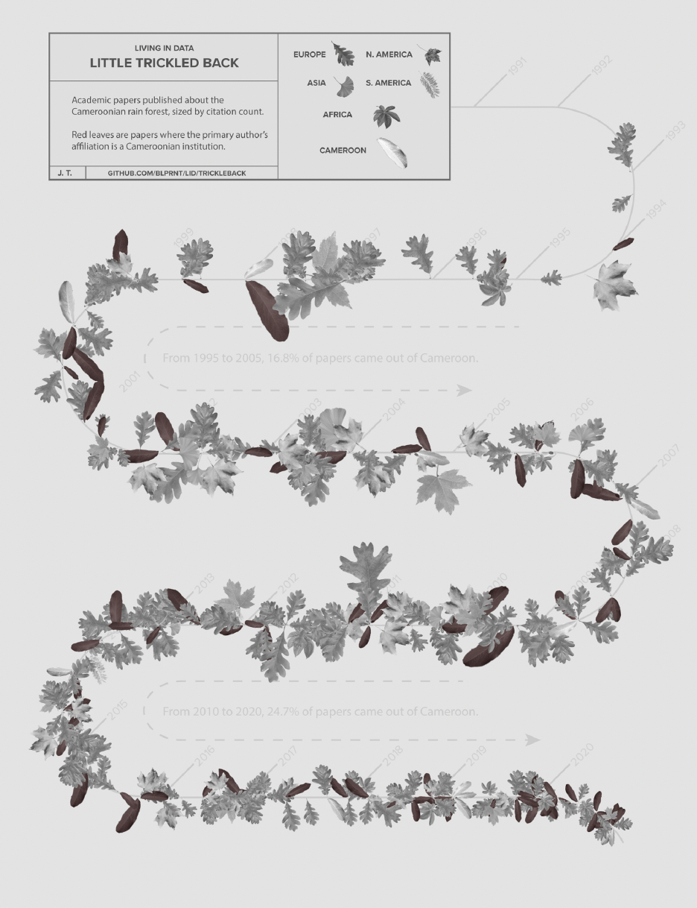
Mostly, though, this book is a guide. It’s a guide for those who have to
live in data and for those who want to create data worlds that are more
livable. It’s a guide for the person who woke up one day, thinking about
how they are being tracked moment by moment by their phone and their
social media platforms and their cars and their cities, and thought to
themselves, how did we get here? It’s a guide for the entrepreneur who is
setting out with a new company, looking back at the havoc that big data has
wrought on our selves and our society, and thinking, we can do better than
this. It’s a guide for individuals and communities who are looking to speak
their own data stories louder than those that are being told about them by
others.
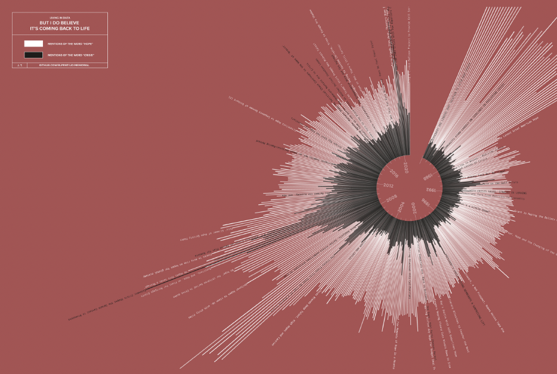
Because we can do better than this. We can create new data worlds that
put humans first.